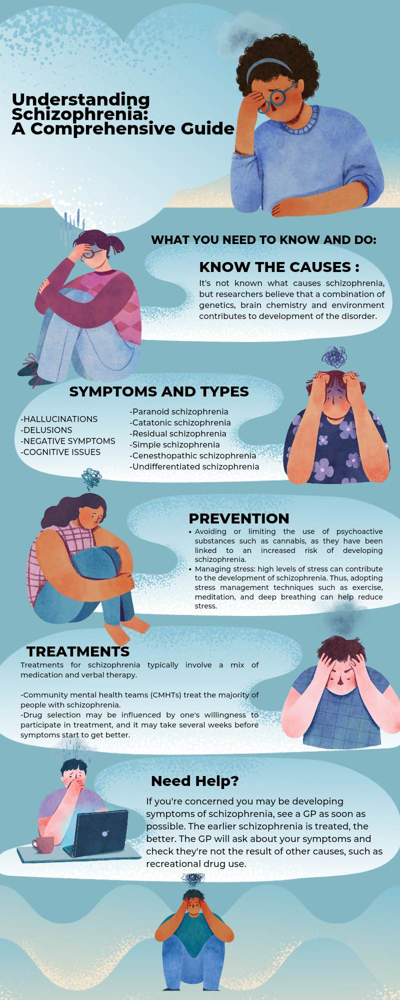
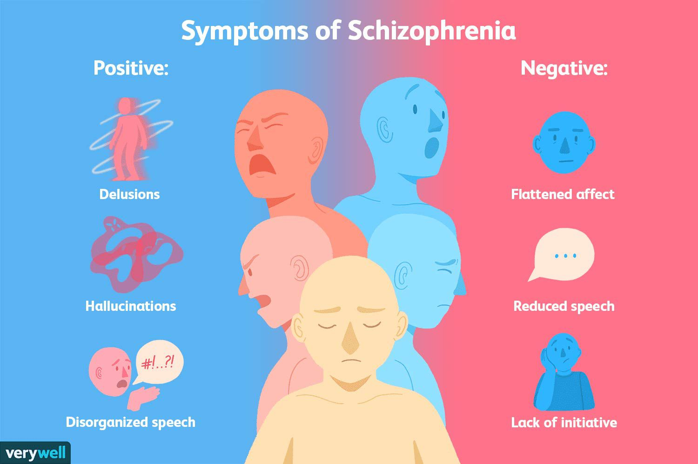
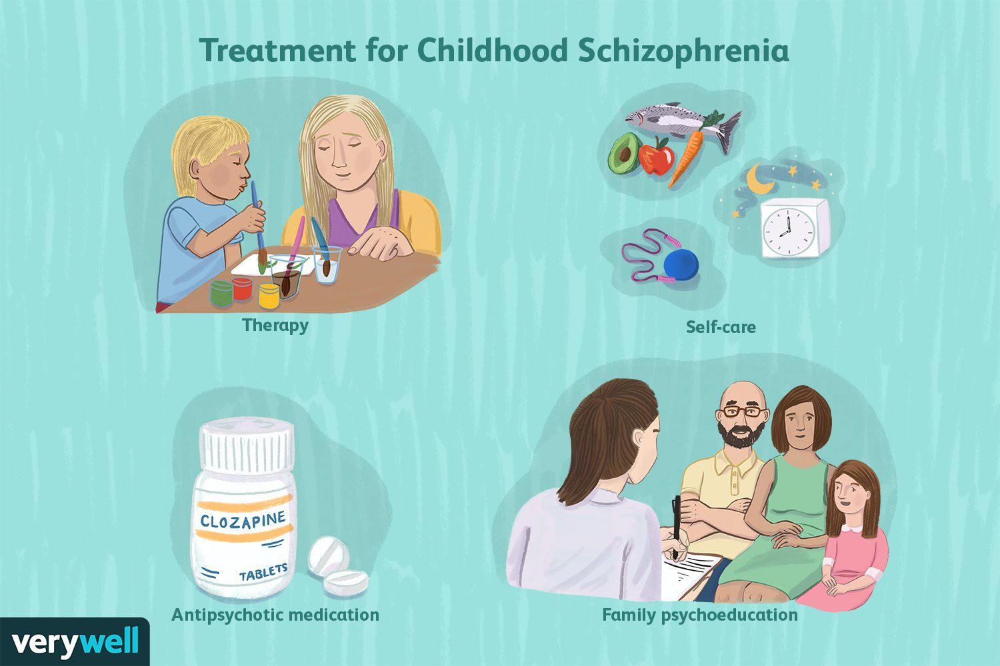

WHAT IS SCHIZOPHRENIA?
Schizophrenia is one of the many difficult mental health disorders, and it is also one of the most persistent and incapacitating. Notably, this disorder appears to be inherited and has a tendency to run in families.
Hallucinations, delusions, disordered thinking, incoherent speech, and irrational behavior are the hallmarks of this disorder. Typically, people with schizophrenia struggle to control and express their emotions. They frequently struggle with decision-making and are confused.
People with schizophrenia are known to isolate themselves from the outside world, experience frequent depressive episodes, and have a high risk of attempting or actually committing suicide when they experience psychotic breakdowns. When a person completely loses touch with reality and the outside world appears to be a disjointed collection of jumbled up sights, sounds, smells, and tastes, this is known as a psychotic breakdown. Schizophrenia patients frequently report hearing voices that are rude, cynical, and abusive. They either hear their own voices in their heads or the voices of people they know.
RISK FACTOR
Although the precise cause of schizophrenia isn't known, certain factors seem to increase the risk of developing or triggering schizophrenia, including:
• Having a family history of schizophrenia
• Some pregnancy and birth complications, such as malnutrition or exposure to toxins or viruses that may impact brain development
• Taking mind-altering (psychoactive or psychotropic) drugs during teen years and young adulthood
CAUSES
Some of the following symptoms have been present for at least six months with impaired functioning for diagnosing someone who has schizophrenia:
• HALLUCINATIONS
- These consist of the ability to hear voices, see objects, or smell things that others cannot. For the individual who is experiencing the hallucination, it is quite real, and it may be very perplexing for a loved one to see. Both critical and frightening voices may be heard during the delusion. Voices may be from someone the person hearing them knows or doesn't know.
• DELUSIONS
- Even when the individual who maintains these erroneous beliefs is exposed to fresh information or facts, their false views remain unchanged. Delusions are frequently accompanied by other cognitive difficulties, such as difficulty focusing or the impression that their ideas are obstructed.

• NEGATIVE SYMPTOMS
- are those that lessen one's talents. Being emotionally flat or having a lifeless, disengaged manner of speaking are frequent negative indicators. Negative symptomatic individuals may lack motivation for life, exhibit little interest in it, or struggle to maintain relationships. Sometimes negative symptoms are mistaken for clinical depression.
• COGNITIVE ISSUES
- Individuals with schizophrenia's cognitive issues frequently have trouble remembering details, structuring their thinking, or finishing activities. Anosognosia, often known as "lack of insight," is a common symptom of schizophrenia and refers to the condition when a person is uninformed that they have the illness.
TYPES OF SCHIZOPHRENIA
Paranoid schizophrenia
This is the most common type of schizophrenia. It may develop later in life than other forms. Symptoms include hallucinations and/or delusions, but your speech and emotions may not be affected.
Hebephrenic schizophrenia
Also known as ‘disorganised schizophrenia’, this type of schizophrenia typically develops when you’re 15-25 years old. Symptoms include disorganised behaviours and thoughts, alongside short-lasting delusions and hallucinations. You may have disorganised speech patterns and others may find it difficult to understand you.
People living with disorganised schizophrenia often show little or no emotions in their facial expressions, voice tone, or mannerisms.
Catatonic schizophrenia
This is the rarest schizophrenia diagnosis, characterised by unusual, limited and sudden movements. You may often switch between being very active or very still. You may not talk much, and you may mimic other’s speech and movement.
Undifferentiated schizophrenia
Your diagnosis may have some signs of paranoid, hebephrenic or catatonic schizophrenia, but it doesn’t obviously fit into one of these types alone.
Residual schizophrenia
You may be diagnosed with residual schizophrenia if you have a history of psychosis, but only experience the negative symptoms (such as slow movement, poor memory, lack of concentration and poor hygiene).
Simple schizophrenia
Simple schizophrenia is rarely diagnosed in the UK. Negative symptoms (such as slow movement, poor memory, lack of concentration and poor hygiene) are most prominent early and worsen, while positive symptoms (such as hallucinations, delusions, disorganised thinking) are rarely experienced.
Cenesthopathic schizophrenia
People with cenesthopathic schizophrenia experience unusual bodily sensations.
TRIGGERS
Triggers are things that can lead to the development of schizophrenia in persons who are predisposed to it.The main psychological triggers of schizophrenia are life events that are stressful, such as:
• bereavement
• losing your job or your house
• divorce
• the breakdown of a relationship
• abuse, whether physical, sexual, or emotional
These kinds of stressful encounters do not produce schizophrenia. They can, however, cause it to develop in someone who is already prone to it.

TREATMENT
Treatments for schizophrenia typically involve a mix of medication and verbal therapy.
Community mental health teams (CMHTs) treat the majority of people with schizophrenia. Talking therapies include cognitive behavioral therapy (CBT), family counseling, and therapeutic arts. CBT aims to help people identify mental patterns and replace them with more practical and realistic ones. Family counseling involves a series of unofficial encounters spread out over six months.
The most important details in this text are the methods for helping a person with schizophrenia, such as family therapy, therapeutic arts, and medication. The most commonly given medications are antipsychotics, which are believed to impact the brain chemical dopamine, which regulates symptoms. Drug selection may be influenced by one's willingness to participate in treatment, and it may take several weeks before symptoms start to get better.
PREVENTION
Unfortunately, there is no guaranteed way to prevent schizophrenia as its causes are complex and not fully understood. However, there are some steps you can take to reduce the risk of developing schizophrenia:
• Avoiding or limiting the use of psychoactive substances such as cannabis, as they have been linked to an increased risk of developing schizophrenia.
• Managing stress: high levels of stress can contribute to the development of schizophrenia. Thus, adopting stress management techniques such as exercise, meditation, and deep breathing can help reduce stress.
• Building a support system: Having supportive relationships with family and friends can help prevent or mitigate the effects of schizophrenia.
• Early intervention: Seek medical help if you experience any signs or symptoms of schizophrenia such as delusions, hallucinations, or disorganized thinking. Early intervention can help manage the symptoms of the condition.
It is also essential to have a healthy lifestyle, including a balanced diet, regular exercise, and adequate sleep. However, even with these measures, it is still possible to develop schizophrenia. If you are concerned about schizophrenia, please talk to a healthcare professional.
